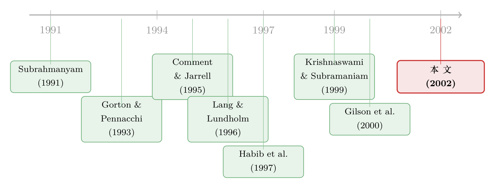

把几摊生意「打包」进一张财报，外人反而更猜得准？
本文读的是 Thomas (2002, Journal of Financial Economics)：当我们不再只盯着那些「主动拆分」的公司，而是看整个横截面，会发现多元化并不必然加剧信息不对称。把多个业务「打包」进一张合并报表，分析师的预测误差反而更小、分歧更少、财报当天的股价反应也更平静——这与「多元化让公司更不透明」的流行说法正好拧着来。
1 一个被「自我选择」绑架的常识
先从一句几乎人人都会点头的话说起。
每当一家庞大的综合性企业（conglomerate）宣布要「聚焦主业」、要把某个业务分拆上市，管理层给出的理由里，总少不了一句：这样做能让投资者更容易看懂我们。换句话说，把一摊摊生意搅在一张合并报表里，外人看不清，于是产生了管理层与外部投资者之间的信息不对称 (asymmetric information)；拆开来，各算各的账，信息不对称就缓解了。这套逻辑听上去顺理成章，本文把它叫做透明度假说 (transparency hypothesis)。
可是，如果这套逻辑真的成立，那么一个尴尬的事实就摆在面前：绝大多数多元化公司，并没有去拆分。 它们一年又一年地维持着多元化的形态（Montgomery, 1994；Denis et al., 1997a）。如果多元化真的处处都在加重信息问题、抬高资本成本，为什么这么多公司宁可忍着也不拆？
首先，一个直接的反驳是：也许「拆分能改善信息」这件事，只对那些真的去拆的公司成立。Krishnaswami 和 Subramaniam (1999)、Gilson et al. (2000)、Habib et al. (1997) 这些研究确实发现，分拆 (spinoff)、分立 (carve-out) 之后，分析师预测变准了、分歧变小了。但请注意——这些样本里的公司，恰恰是那批信息问题最严重、所以才被迫去拆的公司。用它们去回答「多元化和信息不对称在整个公司群体里到底什么关系」，就像只调查了去医院的人，然后得出「人类普遍生病」的结论。这是一个典型的样本选择偏误 (sample selection bias)。（关于「拆分」这件事本身的动机，可参见《拆掉一家公司，是为了让老板「坐不住」》。）
接着，一个更有意思的问题是：会不会方向根本就反了？
2 反转：把生意「打包」，其实是在分散信息风险
这篇论文真正的张力，来自一个被透明度假说忽略掉的可能性。
合并报表是汇总的。一家多元化公司报出来的，是各个分部现金流加总之后的数字。假设外人在预测每个分部现金流时都会犯错，而这些误差在不同分部之间并不是完全正相关的，那么会发生什么？误差会互相抵消。即使外人对单个分部的预测误差，比对一家专注公司 (focused firm) 的预测误差更大，只要这些误差不是步调一致，加总之后的预测反而可能更准。
换句话说，针对每个分部的信息不对称，在加总的过程中被「分散」掉了一部分。本文把这条逻辑称为信息分散假说 (information diversification hypothesis)。
这不是凭空想象。Subrahmanyam (1991) 和 Gorton 与 Pennacchi (1993) 早就用同样的道理解释过：一篮子股票（如指数）所面临的信息不对称，比构成它的单只股票要小——因为篮子的现金流是个加总量，逆向选择 (adverse selection) 被摊薄了。如果一家多元化公司本质上就是一个「装着若干专注公司」的篮子，那么同样的论证就指向了一个反直觉的结论：多元化公司可能比专注公司更不容易被信息不对称困扰。
论文里举的两个例子很传神。通用电气 (GE) 横跨无数行业、还握着一大堆看不透的金融资产，按理说应该极度不透明；可分析师对 GE 的盈利预测却落在「非常、非常窄的区间」里，分析师自己解释说，正因为 GE 是一个分散得很好的「组合」。另一个是当年的美国在线与时代华纳合并——两摊差得很远的生意凑到一起，但「不同业务的预测误差会互相抵消」恰恰被当成一个利好。
注意，这两个假说并不互斥。一家公司完全可以既因为汇总而「不透明」（透明度效应），又因为汇总而「分散了信息风险」（信息分散效应）。论文要回答的，不是「哪个对哪个错」，而是在整个横截面里，净效应到底偏向哪一边。
3 识别策略：不看「拆没拆」，看整个横截面
于是，论文的设计就有了清晰的方向：别再只盯着改组的公司，去看所有公司。
怎么衡量「信息不对称」？作者用了两组互补的代理变量。
第一组来自分析师预测 (analysts' forecasts)：
ERROR（预测准确度）：实际每股盈利 (EPS) 与分析师中位数预测之差的绝对值，再除以财报公布前 5 个交易日的股价。信息不对称越大，预测误差越大。DISPERSION（预测分歧度）：分析师预测的标准差，同样用前 5 日股价做分母。分析师之间越是各执一词，越说明可获得的信息少。
作者特意只用财报公布前最后一个月做出的预测——因为预测越临近期末，越少受到「期初普遍偏乐观」这种系统性偏差的干扰（O'Brien, 1988；Easterwood & Nutt, 1999），也越能反映公司特定的信息（Elton et al., 1984）。
第二组来自盈利公告 (earnings announcement) 当天的股价反应：公告前后的重估幅度 (revaluation)，以及盈余反应系数 (earnings response coefficient, ERC)——即股价对「意外盈利」反应的敏感度。
然后，把这些代理变量对一个多元化的尺子做回归。这个尺子是资产赫芬达尔指数 (asset-based Herfindahl Index, HERF)：
$$ HERF_{it} = \sum_{j=1}^{N_{it}} \left( \frac{TA_{jit}}{\sum_{j=1}^{N_{it}} TA_{jit}} \right)^{2} $$
其中 \(N_{it}\) 是公司 \(i\) 在 \(t\) 年报告的分部数，\(TA_{jit}\) 是第 \(j\) 个分部的资产。直觉很简单：它是各分部资产占比的平方和。对单段公司 (single-segment) 而言 \(HERF=1\)；公司越多元化、资产越分散，\(HERF\) 越小。
两个假说在这里给出方向相反的预言：
- 透明度假说：\(HERF\) 越高（越聚焦）→ 预测误差越小、分歧越少。
- 信息分散假说：\(HERF\) 越高 → 预测误差越大、分歧越大。
为了把别的因素摘干净，作者还控制了一串变量：公司规模（总资产 TA，规模越大预测越准，见 Atiase, 1985）、研发占比 RDSALES 与无形资产占比 INTGTA（成长期权多的公司更难预测，Barth et al., 1998）、杠杆 LEVG、以及一个表示「分部销售额加总对不上合并销售额」的虚拟变量 SALESDEV。
但真正关键的一步，藏在另一个控制变量里：股票收益波动率 VOLATILITY。
4 那个「越控越反」的波动率
VOLATILITY 是用市场模型残差在公告前 $-210$ 至 $-11$ 个交易日的标准差算出来的。Alford 和 Berger (1999) 的逻辑是：波动率越高，分析师每天要消化的、与价格相关的信息越多，预测自然越难。所以控制它，看似天经地义。
然后，反转出现了。
不控制波动率时，回归告诉我们：多元化程度越高（\(HERF\) 越低），预测误差越小、分歧越少——支持信息分散假说。
一旦把波动率放进回归，符号就翻了过来：多元化反而和更大的预测误差、更多的分歧相联系——支持透明度假说。
为什么同一份数据会给出两个相反的答案？因为这里有一个鸡生蛋的纠缠。早有研究（Comment & Jarrell, 1995）发现，多元化公司的收益波动率本来就更低。可问题在于：这部分被压低的波动率，本身可能就是「信息分散效应」的产物——多个业务的现金流加总，波动被熨平了。于是当你「控制波动率」时，你顺手也把信息分散这条渠道一并控制掉了，剩下的残差里自然只看得见透明度那一面。
正因为没办法干净地剥离出「多元化究竟压低了多少波动率」，单看回归系数，很难判断两种效应谁占上风。论文在这里很诚实：回归本身回答不了净效应的方向。这也是为什么作者要换一种打法。
5 匹配组合：让专注公司「白拿」信息分散的好处
这一步设计得很巧。
作者为每一家多元化公司，构造一个由专注公司组成的匹配组合 (matching-firm portfolio)——让这个组合在行业构成上去模仿那家多元化公司的业务版图。这样一来，组合里的专注公司，凭空就获得了「现金流加总、误差互相抵消」的信息分散好处，却完全不用承担多元化带来的透明度损失（毕竟它们各自都是清清爽爽的单一业务公司）。
这相当于人为造出了一个「只有信息分散、没有透明度成本」的对照组。如果透明度成本真的很大，那么真实的多元化公司，其预测误差应该明显高于这个匹配组合。
结果呢？多元化公司的预测误差，与其匹配组合在量级上非常接近。 透明度那一边并没有压出一个显眼的额外惩罚。
6 财报当天：他们早就猜到了
最后，盈利公告当天的证据，把整幅图景补全了。
多元化公司在盈利公告前后的重估幅度更小——这与「外人本来就更能预判多元化公司的盈利」一致：既然早就猜到了，公告日就没什么可大惊小怪的。同时，多元化公司的 ERC 略大，意味着新的盈利信息一旦出现，会被更充分地计入股价。
把这些拼到一起，结论就清楚了：多元化并不会「一律」加剧信息问题。对大多数公司而言，把生意打包进一张报表，外人未必更看不清，甚至可能更猜得准。真正能从拆分中获得信息收益的，只是那一小撮透明度问题特别严重的公司。
这并不是说透明度假说错了。论文的立场更微妙：透明度效应确实存在（控制波动率后看得到），但它在整个横截面里并不占绝对上风，且常常被信息分散效应抵消掉。所以「多元化 = 更不透明 = 更高资本成本」这个被广泛默认的链条，至少需要打上一个问号。
7 文献脉络
这条研究线，可以看成两股力量的合流。
一股来自披露与分析师的传统：Lang 和 Lundholm (1996) 发现披露更充分的公司分析师跟随更多、分歧更小；Swaminathan (1991) 和 Piotroski (1999) 则用分部披露的变化说明了「更多信息 → 更准预测」。这一股自然导向透明度假说。
另一股来自「篮子证券」的理论洞见：Subrahmanyam (1991)、Gorton 与 Pennacchi (1993) 证明了加总会摊薄逆向选择——这正是信息分散假说的根。
把这两股力量放进「多元化」语境的，是一批关注拆分事件的研究：Habib et al. (1997) 的分拆信息模型、Krishnaswami 与 Subramaniam (1999)、以及 Gilson et al. (2000) 关于「拆分后更易吸引行业专家分析师」的证据。它们几乎都站在透明度这一边——但代价是只看了改组的公司。

本文 (Thomas, 2002) 的位置，恰恰是从「事件样本」跳到「整个横截面」，并第一次把信息分散这条被忽略的渠道正式摆上台面。它与同期 Hadlock et al. (2001)（增发公告中多元化公司股价反应更不负面）、Fee 与 Thomas (2001)（多元化与基于交易特征的信息不对称负相关）一道，共同松动了「多元化必然恶化信息」的旧共识。（关于信息不对称、意见分歧与并购股价反应的另一条线，可参见《同样是收购，为什么股价反应天差地别？——把答案归结到一个「波动率」》；关于多元化折价的实证拆解，可参见《拆开，是为了把「不一样」分开》。）
8 数据
- 样本：来自
I/B/E/S的分析师预测与实际盈利，配以Compustat的合并与分部数据、CRSP的股价。 - 共识预测：用财报公布当月之前、最近一个月的 EPS 中位数预测；要求每家公司至少有 3 位分析师跟随。
- 区间：财政年度结束于 1985 年 7 月至 1996 年 6 月，共 11 个财年。
- 剔除：受管制的公用事业（SIC 4800–4829、4910–4949）、金融业（SIC 6000–6999）、外国公司、ADR、REIT；并剔除绝对预测误差超过股价 100%、或预测标准差超过股价 20% 的极端观测（前者删 70 个、后者删 29 个）。
- 规模：最终
12,282个预测年，含3,814个多段公司观测与8,468个单段公司观测；共2,677家公司、224个三位 SIC 行业。
评论与延伸（Q&A + 研究方向）
(a) 几个可能的疑问
Q：这和「多元化折价」(diversification discount) 是一回事吗？
不是。Lang 和 Stulz (1994) 那条线问的是多元化是否毁损公司价值（估值高低）；本文问的是多元化是否加剧信息不对称（外人看不看得清）。两者可能有关联——更不透明或许抬高资本成本进而压低估值——但本文刻意把「信息」这一环单独拎出来量，没有去碰价值折价本身。
Q：控制波动率到底对不对？这是全文最大的争议点吧？
正是。这是一把双刃剑。从「分析师处理信息的难度」看，控制波动率是合理的；但从「信息分散」的机制看，被压低的波动率本身就是该效应的一部分，控制它等于把想检验的渠道也控制掉了。这正是为什么作者不敢只靠回归下结论，而要补上匹配组合法。读者得明白：那个「越控越反」的符号翻转，不是 bug，而是这篇论文最核心的方法论信息。
Q：既然多元化公司更好预测，为什么管理层还总把「拆分能减少信息不对称」挂嘴边？
因为对他们那一类公司来说，这话可能是真的。本文的结论是「不普遍成立」，而非「永不成立」。会主动拆分的，往往正是透明度问题最严重、信息分散又救不回来的那一小撮——对它们而言拆分确有信息收益，管理层的说法没错，只是不能外推到所有公司。
Q：匹配组合法真的能把「信息分散」干净地复制给专注公司吗？
这是该方法的命门。匹配是按行业构成做的近似，组合里专注公司的现金流相关结构，未必和真实多元化公司内部分部之间的相关结构一致。如果匹配组合「分散」得过头或不足，比较就会有偏。但它的好处是逻辑透明：构造上就保证专注公司能白拿信息分散的好处，所以「误差量级接近」这一发现，方向上是可信的。
Q：「重估更小」和「ERC 更大」放在一起，会不会自相矛盾？
不矛盾，反而互补。重估更小，说的是公告日整体的「意外」更少——因为外人早有预判；ERC 更大，说的是一旦真有意外，单位意外被计入价格的比例更高。前者讲「意外的量少」，后者讲「意外的价格敏感度」，两者都指向「多元化公司的盈利信息环境并不更糟」。
Q：单段公司一律 \(HERF=1\)，会不会把测量误差混进来？
有这个风险。分部的划分依赖公司自身的报告口径，单段与多段的界线本身可能内生于披露策略。作者用熵指数、三位/两位 SIC 口径、分部数等多种替代度量做了稳健性检验，结论不变；而且他发现信息不对称只与非相关多元化相关、与相关多元化无关，这恰好和信息分散的直觉吻合，间接缓解了纯测量噪声的担忧。
(b) 几个可能的研究问题与提案
1. 把这套逻辑搬到公司债市场。
【经济故事】本文的代理变量全在股票/分析师一侧。但信息分散对信用市场的含义同样直接：如果多元化摊薄了现金流波动，多元化发行人的违约不确定性应当更低，逆向选择更小——这该体现在更窄的债券买卖价差、更低的一级市场折价 (underpricing)、以及更小的评级分歧上。Fee 与 Thomas (2001) 已用股票交易特征做过；债券一侧仍是空白。 【可行性】高。
TRACE的成交数据加Mergent FISD的发行与评级信息，配合分部数据构造 \(HERF\)，可直接回归债券层面的流动性与利差。识别上仍会面临「控不控波动率」的同一道难题，但可借鉴本文的匹配组合思路构造「专注发行人组合」。
2. 外资持有人是否偏爱多元化公司？
【经济故事】外资通常被视为信息劣势方。若多元化的「篮子效应」缩小了外人与管理层的信息差，那么信息劣势越大的投资者（如外资），应当越偏好多元化公司——因为打包恰好对冲了他们最吃亏的那部分。这把本文的横截面结论与跨境持股偏好连了起来。 【可行性】中。需要 FactSet/13F 之类的机构与跨境持股数据，叠加分部口径的多元化度量。识别挑战在于多元化与公司规模、跨境上市等高度相关，需要细致的控制或工具变量。
3. 用 SFAS 131 分部披露改革做一次自然实验。
【经济故事】1997 年的 SFAS 131 强制改变了美国公司的分部披露口径。如果透明度渠道真实存在，那么被新规「逼着」披露更多分部信息的多元化公司，其预测误差与分歧应当下降——这能把本文里纠缠不清的两种效应在时间维度上掰开一道缝。 【可行性】中–高。事件时点干净，可用受影响程度做处理强度的双重差分 (difference-in-differences, DiD)。难点是把「被迫多披露」与「自愿改善披露」区分开，并处理同期其他制度变化。
4. 信用周期里的「信息分散」是否是一份流动性保险？
【经济故事】把本文与流动性危机文献接上：危机中逆向选择骤升、流动性枯竭，而多元化的篮子效应理应在此时最值钱——多元化发行人的债券流动性是否在压力期跌得更少？这相当于检验信息分散在坏天气里的「期权价值」。 【可行性】中。需要按信用周期/危机窗口切分的债券流动性面板（如新冠期间的
TRACE数据），并控制掉「多元化公司本就更大、更安全」这一混杂。
参考文献
- Comment, R., Jarrell, G. (1995). Corporate focus and stock returns. Journal of Financial Economics 37(1), 67–87.
- Gilson, S., Healy, P., Noe, C., Palepu, K. (2000). Corporate focus and the benefits from more specialized analyst coverage. Working Paper, Harvard Business School.
- Gorton, G., Pennacchi, G. (1993). Security baskets and index-linked securities. Journal of Business 26, 1–27.
- Habib, M., Johnsen, D. B., Naik, N. (1997). Spinoffs and information. Journal of Financial Intermediation 6, 153–176.
- Hadlock, C., Ryngaert, M., Thomas, S. (2001). Corporate structure and equity offerings: are there benefits to diversification? Journal of Business 54, 613–635.
- Krishnaswami, S., Subramaniam, V. (1999). Information asymmetry, valuation, and the corporate spin-off decision. Journal of Financial Economics 53, 73–112.
- Lang, M., Lundholm, R. J. (1996). Corporate disclosure policy and analyst behavior. The Accounting Review 71, 467–492.
- Subrahmanyam, A. (1991). A theory of trading in stock index futures. Review of Financial Studies 4(1), 17–51.
- Swaminathan, S. (1991). The impact of SEC mandated segment data on price variability and divergence of beliefs. The Accounting Review 66, 23–41.
- Thomas, S. (2002). Firm diversification and asymmetric information: evidence from analysts' forecasts and earnings announcements. Journal of Financial Economics 64(3), 373–396.